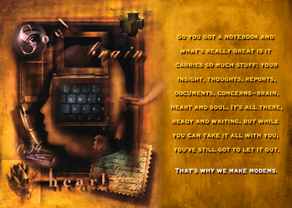

Your notebook is a connection with yourself. We offer the connection to the rest of the world. With our PCMCIA cellular Power Class or Lifestyle Series modems, you've got a direct line to what was never available to a portable before: complete freedom and total access. Just call Motorola 800-766-4883 or visit the retailer nearest you.
Return to Home Page.
Go to Motorola World Wide Web Site.